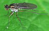

campsicnemus

Definition: Campsicnemus is a genus of flies in family Dolichopodidae. There are more than 290 described species, made up of 34 Palearctic, 22 Nearctic, seven Afrotropic, 170 Australasian and Oceanian, and seven Indomalayan species. Some species endemic to the Hawaiian islands are characterized by their lack of wings. After the introduction of invasive ants and other alien species such as wild boar (Sus scrofa) to the islands, some of these flightless species are believed extinct.The generic name is derived from the Ancient Greek καμψις ("curve") and κνημη ("tibia"). This refers to the modified mid tibia of the males, a male secondary sexual character that is very distinct in Campsicnemus.
Source: Wikipedia
Wikipedia Page (Something wrong with this association? Let us know.)
Wikidata Page (Something wrong with this association? Let us know.)